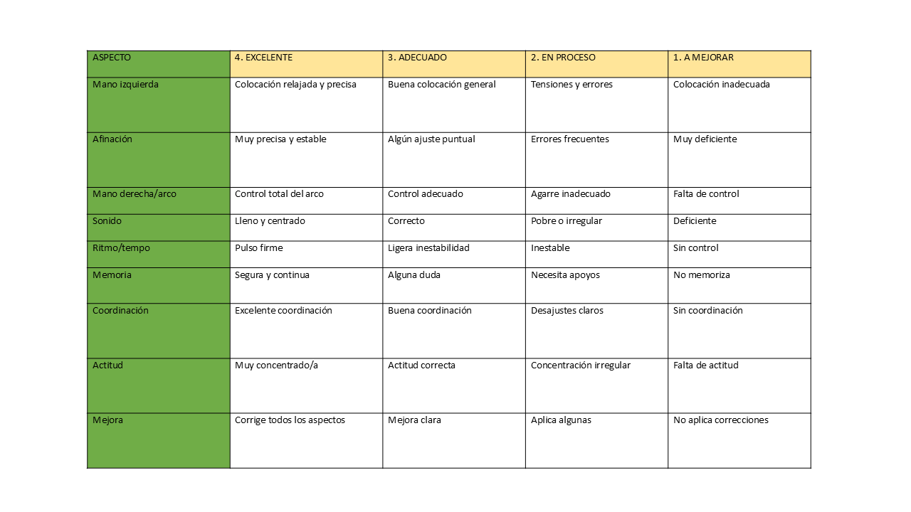

Evaluación.
A continuación encontramos en cada sección la evaluación que va a llevar a cabo el o la docente y la autoevaluación que lleva a cabo el alumnado.
Autoevaluación
Diana de Evaluación
Se utilizará una diana de evaluación para que el alumnado valore su propia interpretación tras la escucha de la grabación.
Después de la primera grabación en la actividad 3.
Tras la segunda grabación.
Se evalúa: la percepción de afinación, seguridad en la interpretación, control del sonido, la expresividad y el grado de mejora percibido.
Los resultados nos permiten fomentar la autoevaluación, comparar la percepción del alumnado con la del docente y detectar la falta de conciencia interpretativa.
Rosa azul verde ficha educativa herramienta de evaluación diana lectura en voz alta de Mª Ángeles Gómez Menor
Evaluación de docente.
Evaluación centrada en “Escuchar para mejorar”.
En esta situación de aprendizaje se utilizan diferentes instrumentos de evaluación con el objetivo de recoger información sobre el proceso de aprendizaje del alumnado, ofrecer retroalimentación y favorecer la mejora de la interpretación musical mediante la escucha y la autoevaluación.
En primer lugar utilizo una rúbrica de interpretación musical para evaluar la interpretación del alumnado en las diferentes grabaciones, permitiendo valorar la evolución y la aplicación de mejoras.
En la primera grabación se realiza una evaluación inicial y en la segunda grabación la evaluación final del progreso.
Se evalúa: afinación, ritmo, calidad del sonido, expresividad y la aplicación de correcciones.
Los resultados nos permiten detectar dificultades concretas, valorar la evolución entre grabaciones y ofrecer un feedback individualizado al alumnado.
